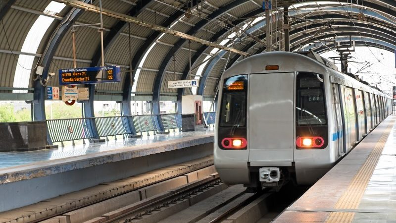

Express trains are express rail services of India. Express trains make a small number of stops, unlike ordinary passenger or local trains. Because of their limited stops, these trains are able to obtain the highest speeds of any trains in India. An express train is one where the average speed, excluding halts, is greater than 42 km/h. Including halts the average speed often is below 42 km/h. Although this is pretty slow as compared to international standards, the "Express" trains here mean faster than the ordinary passenger and local trains. In some cases, trains run express where there is an overlapping passenger train service available, and run as passenger train, where there is no supplemental passenger service.

The bullet train, or “Shinkansen”, is a type of passenger train which operates on Japan's high-speed railway network. Capable of reaching a maximum speed of 320kms per hour, the bullet train offers riders an exceptionally unique and efficient travel experience.
The Mumbai Suburban Railway consists of exclusive inner suburban railway lines augmented by commuter rail on main lines serving outlying suburbs to serve the Mumbai Metropolitan Region. Spread over 390 kilometres, the suburban railway operates 2,342 train services and carries more than 7.5 million commuters
The Mumbai Metro (Marathi: मुंबई मेट्रो) is a rapid transit (MRT) system serving ... In April 2012, the MMRDA announced plans to grant the Mumbai Metro Rail Company increased management ... The arrangement will facilitate the exchange of information, personnel and technology in the transportation sector.

A steam locomotive is a type of railway locomotive that produces its pulling power through a steam engine. These locomotives are fuelled by burning combustible material – usually coal, wood, or oil — to produce steam in a boiler. ... Richard Trevithick built the first steam locomotive in 1802.